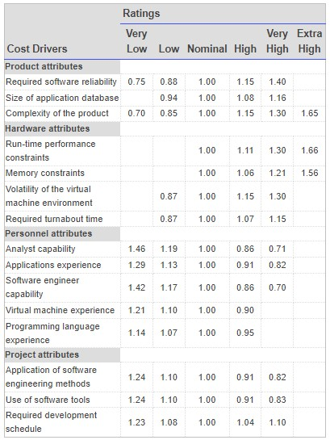

Estimation of Project Metrics
Objectives
After completing this experiment you will be able to:
- Categorize projects using COCOMO, and estimate effort and development time required for a project
- Estimate the program complexity and effort required to recreate it using Halstead's metrics
Theory
Project Estimation Techniques
A software project is not just about writing a few hundred lines of source code to achieve a particular objective. The scope of a software project is comparatively quite large, and such a project could take several years to complete. However, the phrase "quite large" could only give some (possibly vague) qualitative information. As in any other science and engineering discipline, one would be interested to measure how complex a project is. One of the major activities of the project planning phase, therefore, is to estimate various project parameters in order to take proper decisions. Some important project parameters that are estimated include:
- Project size: What would be the size of the code written say, in number of lines, files, modules?
- Cost: How much would it cost to develop a software? A software may be just pieces of code, but one has to pay to the managers, developers, and other project personnel.
- Duration: How long would it be before the software is delivered to the clients?
- Effort: How much effort from the team members would be required to create the software?
In this experiment we will focus on two methods for estimating project metrics: COCOMO and Halstead's method.
COCOMO
COCOMO (Constructive Cost Model) was proposed by Boehm. According to him, there could be three categories of software projects: organic, semidetached, and embedded. The classification is done considering the characteristics of the software, the development team and environment. These product classes typically correspond to application, utility and system programs, respectively. Data processing programs could be considered as application programs. Compilers, linkers, are examples of utility programs. Operating systems, real-time system programs are examples of system programs. One could easily apprehend that it would take much more time and effort to develop an OS than an attendance management system.
The concept of organic, semidetached, and embedded systems are described below.
- Organic: A development project is said to be of organic type, if
- The project deals with developing a well understood application
- The development team is small
- The team members have prior experience in working with similar types of projects
- Semidetached: A development project can be categorized as semidetached type, if
- The team consists of some experienced as well as inexperienced staff
- Team members may have some experience on the type of system to be developed
- Embedded: Embedded type of development project are those, which
- Aims to develop a software strongly related to machine hardware
- Team size is usually large
Boehm suggested that estimation of project parameters should be done through three stages: Basic COCOMO, Intermediate COCOMO, and Complete COCOMO.
Basic COCOMO Model
The basic COCOMO model helps to obtain a rough estimate of the project parameters. It estimates effort and time required for development in the following way:
Effort = a * (KDSI)b PM
Tdev= 2.5 * (Effort)c Months
Person required= Effort/Tdev
where,
- KDSI is the estimated size of the software expressed in Kilo Delivered Source Instructions
- a, b, c are constants determined by the category of software project
- Effort denotes the total effort required for the software development, expressed in person months (PMs)
- Tdev denotes the estimated time required to develop the software (expressed in months)
- The value of the constants a, b, c are given below:
| Software Project | a | b | c |
|---|---|---|---|
| Organic | 2.4 | 1.05 | 0.38 |
| Semi-detached | 3.0 | 1.12 | 0.35 |
| Embedded | 3.6 | 1.20 | 0.32 |
Intermediate COCOMO Model
The basic COCOMO model considers that effort and development time depends only on the size of the software. However, in real life there are many other project parameters that influence the development process. The intermediate COCOMO take those other factors into consideration by defining a set of 15 cost drivers (multipliers) as shown in the table below [i]. Thus, any project that makes use of modern programming practices would have lower estimates in terms of effort and cost. Each of the 15 such attributes can be rated on a six-point scale ranging from "very low" to "extra high" in their relative order of importance. Each attribute has an effort multiplier fixed as per the rating. The product of effort multipliers of all the 15 attributes gives the Effort Adjustment Factor (EAF).
Cost drivers for Intermediate COCOMO http://en.wikipedia.org/wiki/COCOMO
EAF is used to refine the estimates obtained by basic COCOMO as follows:
Effort|corrected = Effort * EAF
Tdev|corrected = 2.5 * ( Effort|corrected) c
Complete COCOMO Model
Both the basic and intermediate COCOMO models consider a software to be a single homogeneous entity -- an assumption, which is rarely true. In fact, many real life applications are made up of several smaller sub-systems. (One might not even develop all the sub-systems -- just use the available services). The complete COCOMO model takes these factors into account to provide a far more accurate estimate of project metrics.
To illustrate this, consider a very popular distributed application: the ticket booking system of the Indian Railways. There are computerized ticket counters in most of the railway stations of our country. Tickets can be booked / cancelled from any such counter. Reservations for future tickets, cancellation of reserved tickets could also be performed. On a high level, the ticket booking system has three main components:
- Database
- Graphical User Interface (GUI)
- Networking facilities
Among these, development of the GUI is considered as an organic project type; the database module could be considered as a semi-detached software. The networking module can be considered as an embedded software. To obtain a realistic cost, one should estimate the costs for each component separately, and then add it up.
Advantages of COCOMO
COCOMO is a simple model, and should help one to understand the concept of project metrics estimation.
Drawbacks of COCOMO
COCOMO uses KDSI, which is not a proper measure of a program's size. Indeed, estimating the size of a software is a difficult task, and any slight miscalculation could cause a large deviation in subsequent project estimates. Moreover, COCOMO was proposed in 1981 keeping the waterfall model of project life cycle in mind. It fails to address other popular approaches like prototype, incremental, spiral, agile models. Moreover, in present day a software project may not necessarily consist of coding of every bit of functionality. Rather, existing software components are often used and glued together towards the development of a new software. COCOMO is not suitable in such cases.
COCOMO II was proposed later in 2000 to many of address these issues.
Halstead's Complexity Metrics
Halstead took a linguistic approach to determine the complexity of a program. According to him, a computer program consists of a collection of different operands and operators. The definition of operands and operators could, however, vary from one person to another and one programming language to other. Operands are usually the implementation variables or constants -- something upon which an operation could be performed. Operators are those symbols that affects the value of operands. Halstead's metrics are computed based on the operators and operands used in a computer program. Any given program has the following four parameters:
- n1: Number of unique operators used in the program
- n2: Number of unique operands used in the program
- N1: Total number of operators used in the program
- N2: Total number of operands used in the program
Using the above parameters one compute the following metrics:
- Program Length: N = N1 + N2
- Program Vocabulary: n = n1 + n2
- Volume: V = N * lg n
- Difficulty: D = (n1 * N2) / (2 * n2)
- Effort: E = D * V
- Time to Implement: T = E / 18 (in seconds)
The program volume V is the minimum number of bits needed to encode the program. It represents the size of the program while taking into account the programming language. The difficulty metric indicates how difficult a program is to write or understand. Effort denotes the "mental effort" required to develop the software, or to recreate the same in another programming language [4].